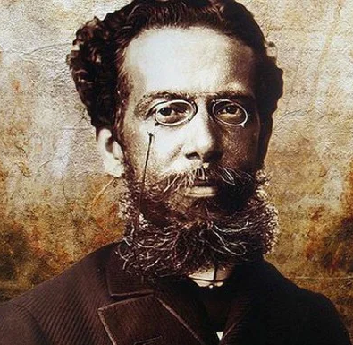
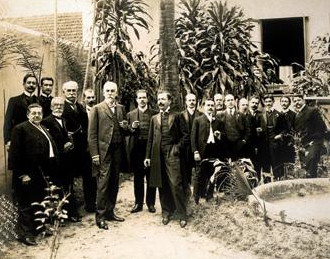
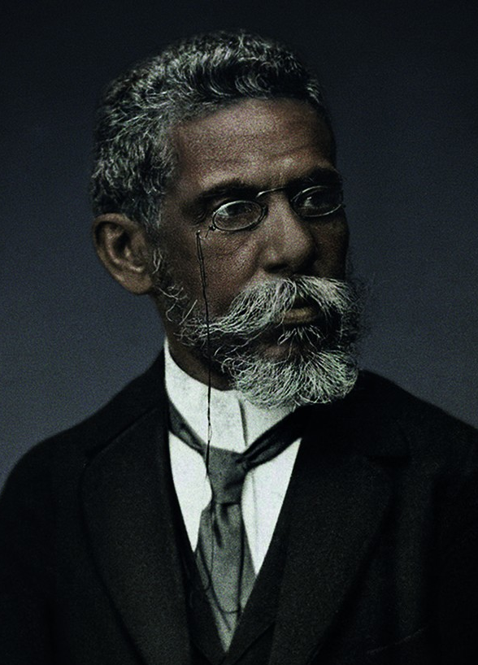

Joaquim Maria Machado de Assis, nascido no rio de Janeiro (21 de junho de 1839
- 29 de setembro de 1908) foi um escritor brasileiro, considerado por muitos críticos,
estudiosos, escritores e leitores o maior nome da literatura brasileira. Escreveu em
praticamente todos os gêneros literários, sendo poeta, romancista, cronista, dramaturgo,
contista, folhetinista, jornalista e crítico literário. Testemunhou a Abolição da escravatura
e a mudança política no país quando a República substituiu o Império, além das mais
diversas reviravoltas pelo mundo em finais do século XIX e início do XX, tendo sido
grande comentador e relator dos eventos político-sociais de sua época.
Nascido no Morro do Livramento, Rio de Janeiro, de uma família pobre, mal estudou em escolas públicas e
nunca frequentou universidade. Para o considerado crítico literário norte-americano Harold Bloom,
Machado de Assis é o maior escritor negro de todos os tempos, embora outros estudiosos prefiram
especificar que Machado era mestiço, filho de um descendente de negros alforriados e de uma
portuguesa da ilha de São Miguel. Seus biógrafos notam que, interessado pela boemia e pela corte, lutou
para subir socialmente abastecendo-se de superioridade intelectual e da cultura da capital
brasileira. Para isso, assumiu diversos cargos públicos, passando pelo Ministério da Agricultura, do
Comércio e das Obras Públicas, e conseguindo precoce notoriedade em jornais onde publicava suas
primeiras poesias e crônicas. Machado de Assis pôde assistir, durante sua vida, que abarca o final da
primeira metade do século XIX até os anos iniciais do século XX, a enormes mudanças históricas na
política, na economia e na sociedade brasileira e também mundial. Em sua maturidade, reunido a
intelectuais e colegas próximos, fundou e foi o primeiro presidente unânime da Academia Brasileira de
Letras.
A extensa obra machadiana constitui-se de dez romances, 205 contos, dez peças teatrais, cinco coletâneas
de poemas e sonetos, e mais de seiscentas crônicas. Machado de Assis é considerado o introdutor do
Realismo no Brasil, com a publicação de Memórias Póstumas de Brás Cubas (1881). Este romance é posto ao
lado de todas suas produções posteriores, Quincas Borba, Dom Casmurro, Esaú e Jacó e Memorial de Aires,
ortodoxamente conhecidas como pertencentes à sua segunda fase, em que notam-se traços de crítica social,
ironia e até pessimismo, embora não haja rompimento de resíduos românticos. Dessa fase, os críticos
destacam que suas melhores obras são as do que se passou a chamar de "Trilogia Realista". Sua primeira
fase literária é constituída de obras como Ressurreição, A Mão e a Luva, Helena e Iaiá Garcia, onde
notam-se características herdadas do Romantismo, ou "convencionalismo", como prefere a crítica moderna.
Sua obra foi de fundamental importância para as escolas literárias brasileiras do século XIX e do século
XX e surge nos dias de hoje como de grande interesse acadêmico e público para entender o Brasil e o
mundo. Influenciou grandes nomes das letras, como Olavo Bilac, Lima Barreto, Drummond de Andrade, John
Barth, Donald Barthelme e muitos outros. Ainda em vida, alcançou fama e prestígio pelo Brasil e países
vizinhos. Hoje em dia, por sua inovação literária e por sua audácia em temas sociais e precoces, é
frequentemente visto como o escritor brasileiro de produção sem precedentes, de modo que, recentemente,
seu nome e sua obra têm alcançado diversos críticos, influenciados, estudiosos e admiradores do mundo
inteiro. Machado de Assis é considerado um dos grandes gênios da história da literatura, ao lado de
autores como Dante, Shakespeare e Camões. Machado de Assis e Eça de Queiroz são considerados os dois
maiores escritores em língua portuguesa do século XIX. Foi incluído na lista oficial dos Heróis
Nacionais do Brasil e é homenageado pelo principal prêmio literário brasileiro, o Prêmio Machado de
Assis.
CURIOSIDADE 01
Início nas letras
Machado de Assis tinha um avô (Francisco de Assis) que era escravo na
fazenda do militar Bento Barroso Pereira, que ocupou o cargo de Ministro da Guerra de 1824 a
1828, na época em que o Brasil ainda era um império. Pereira era casado com Maria José de
Mendonça Barroso, que batizou Machado de Assis e empresta livros de sua biblioteca quando ele
começou a ler.
Biografia
1 - Primeiros anos
Machado de Assis nasceu em 21 de junho de 1839, no Morro do Livramento, no Rio de Janeiro, então capital
do Império, em pleno Período Regencial. Seu pai foi Francisco José de Assis, mulato que pintava paredes,
filho de Francisco de Assis e Inácia Maria Rosa, ambos pardos e escravos alforriados. A mãe foi a
portuguesa Maria Leopoldina Machado da Câmara, branca, filha de Estêvão José Machado e Ana Rosa. Os
Machado haviam emigrado para o Brasil em 1815, oriundos da Ilha de São Miguel, no arquipélago português
dos Açores. Ambos os pais de Machado de Assis sabiam ler e escrever, fato incomum na sua época e classe
social. Ambos eram agregados da Dona Maria José de Mendonça Barroso Pereira, esposa do falecido senador
Bento Barroso Pereira, que abrigou seus pais e os permitiu morar junto com ela.
As terras do Livramento eram ocupadas pela chácara da família de Maria José e já em 1818 o terreno
começou a ser loteado de tão imenso que era, dando origem à rua Nova do Livramento. Maria José tornou-se
madrinha do bebê e Joaquim Alberto de Sousa da Silveira, seu cunhado, tornou-se o padrinho, de modo que
os pais de Machado resolveram homenagear os dois nomeando-o com seus nomes. Nascera junto a ele uma
irmã, que morreu jovem, aos 4 anos, em 1845. Iniciou seus estudos numa escola pública da região, mas não
se mostrou interessado por ela. Ocupava-se também em celebrar missas, o que lhe fez conhecer o Padre
Silveira Sarmento, que, segundo certos biógrafos, se tornou seu mentor de latim e amigo.

Em seu folhetim Casa Velha, publicado de janeiro de 1885 a fevereiro de 1886 na revista carioca A
Estação, e publicado pela primeira vez em livro em 1943 graças à Lúcia Miguel Pereira, Machado fornece
descrição do que seria a casa principal e a capela da chácara do Livramento: "A casa, cujo lugar e
direção não é preciso dizer, tinha entre o povo o nome de Casa Velha, e era-o realmente: datava dos fins
do outro século. Era uma edificação sólida e vasta, gosto severo, nua de adornos. Eu, desde criança,
conhecia-lhe a parte exterior, a grande varanda da frente, os dois portões enormes, um especial às
pessoas da família e às visitas, e outro destinado ao serviço, às cargas que iam e vinham, às seges, ao
gado que saía a pastar. Além dessas duas entradas, havia, do lado oposto, onde ficava a capela, um
caminho que dava acesso às pessoas da vizinhança, que ali iam ouvir missa aos domingos, ou rezar a
ladainha aos sábados". A vizinhança, de forte influência católica, frequentava a missa na capela; a casa
era "uma espécie de vila ou fazenda", onde Machado passou sua infância.
Ao completar 10 anos, Machado tornou-se órfão de mãe. Mudou-se com seu pai para São Cristóvão, na Rua
São Luís de Gonzaga nº 48. Seu pai viria a casar em segundas núpcias, em 18 de junho de 1854, com Maria
Inês da Silva, mulata e lavadeira, mulher de grande coração que viria a ser o amparo da sua infância.
Maria Inês cuidaria do menino após a morte de Francisco, algum tempo tempo depois. Segundo escrevem
alguns biógrafos, a madrasta confeccionava doces numa escola reservada para meninas e Machado teve aulas
no mesmo prédio, enquanto à noite estudava língua francesa com um padeiro imigrante. Certos biógrafos
notam seu imenso e precoce interesse e abstração por livros.
CURIOSIDADE 02
O Bruxo do Cosme Velho
O escritor carioca morou durante muitos anos na Rua Cosme Velho, no bairro de mesmo nome, no Rio
de
Janeiro. Diz a lenda que ele queimou várias cartas em um caldeirão no sobrado situado nesse
endereço, fazendo a vizinhança o chamar de “O Bruxo do Cosme Velho” - alcunha que só se
popularizou
quando o poeta Carlos Drummond de Andrade escreveu “A um bruxo, com amor”, no qual reverencia a
vida
e a obra de Machado de Assis.
2 - Jornais, poemas e óperas
Tudo indica que Machado evitou o subúrbio carioca e procurou a subsistência no centro da cidade. Com
muitos planos e espírito aventureiro, fez algumas amizades e relacionamentos. Em 1854, publicou seu
primeiro soneto, dedicado à "Ilustríssima Senhora D.P.J.A", assinando como "J. M. M. Assis", no
Periódico dos Pobres. No ano seguinte, passou a frequentar a livraria do jornalista e tipógrafo
Francisco de Paula Brito. Paula Brito era um humanista e sua livraria, além de vender remédios, chás,
fumo de rolo, porcas e parafusos, também servia como ponto de encontro da sua Sociedade Petalógica
(peta=(ê), s. f. 1. Mentira, patranha). Um tempo mais tarde, Machado se referiria à Sociedade da
seguinte forma: "Lá se discutia de tudo, desde a retirada de um ministro até a pirueta da dançarina da
moda, desde o dó do peito de Tamberlick até os discursos do Marquês do Paraná".
No dia 12 de janeiro de 1855, Brito publicou os poemas "Ela" e "A Palmeira" na Marmota Fluminense,
revista bimensal do livreiro. Estes dois versos, reunidos junto àquele soneto para a Dona
Patronilha, fazem parte da primeira produção literária de Machado de Assis. Aos dezessete anos, foi
contratado como aprendiz de tipógrafo e revisor de imprensa na Imprensa Nacional, onde foi protegido e
ajudado por Manuel Antônio de Almeida (que anos antes havia publicado sua magnum opus Memórias de um
Sargento de Milícias), que o incentivou a seguir a carreira literária. Machado trabalhou na Imprensa
Oficial de 1856 a 1858. No fim deste período, a convite do poeta Francisco Otaviano, passou a colaborar
para o Correio Mercantil, importante jornal da época, escrevendo crônicas e revisando textos.
Durante esta época o jovem já frequentava teatros e outros meios artísticos. Em novembro de 1859,
estreava Pipelet, ópera com libreto de sua autoria baseada em Os Mistérios de Paris de Eugène Sue e
com música de Ferrari. Escreveu ele sobre a apresentação:
"Abre-se segunda-feira, a Ópera Nacional com o Pipelet, ópera em actos, música de Ferrari, e poesia
do
Sr. Machado de Assis, meu íntimo amigo,
meu alter ego, a quem tenho muito affecto, mas sobre quem não posso dar opinião nenhuma."
Pipelet não agrada consideravelmente o público e os folhetinistas ignoram-na. Gioacchino Giannini, que
dirigiu a orquestra da ópera, sentiu-se contrariado com a orquestra e escreveu num artigo: "Não
falaremos do desempenho de Pipelet. Isso seria enfadonho, horrível e espantoso para quem o viu tão
regularmente no Teatro de São Pedro". O final da ópera era melancólico, com o enterro agonizante do
personagem Pipelet. Machado de Assis, em 1859, escreveu que "o desempenho da mesma maneira que o
primeiro, fez nutrir esperança de uma boa companhia de canto." De fato, o jovem nutria interesse na
campanha de construção da Ópera Nacional. No ano seguinte a de Pipelet, produziu um libreto chamado As
Bodas de Joaninha, entretanto sua repercussão foi nula. Anos mais tarde, registraria a nostalgia do
folhetinismo de sua juventude.
CURIOSIDADE 03
Academia Brasileira de Letras
Machado de Assis foi um dos membros fundadores da Academia Brasileira de Letras (ABL), em 1897, ao
lado de ícones como Olavo Bilac, Visconde de Taunay e Ruy Barbosa. Sua cadeira, a de número 23, já
foi ocupada por outros escritores famosos, como Lafayette Rodrigues Pereira, Jorge Amado e Zélia
Gattai. Desde 2013, a posição pertence a Antônio Torres. A inspiração para a ABL, da qual Machado
foi o primeiro presidente, veio da Academia Francesa de Letras.
3 - Crisálidas, teatros e política
Aos 21 anos de idade Machado já era uma personalidade considerada entre as rodas intelectuais cariocas.
A esta altura já era conhecido por Quintino Bocaiúva, que o convidou para o Diário do Rio de Janeiro,
onde Machado trabalhou intensamente como repórter e jornalista de 1860 a 1867, com Saldanha Marinho
supervisionando-o. Colaborou para o Jornal das Famílias sob pseudônimos: Job, Vitor de Paula, Lara, Max,
e para a Semana Ilustrada, assinando seu nome ou pseudônimos. Bocaiúva admirava o gosto de Machado pelo
teatro, mas considerava suas obras destinadas à leitura e não à encenação. Com a morte do pai, Machado
lhe dedica a coletânea de poesias “Crisálidas”: “À Memória de Francisco José de Assis e Maria Leopoldina
Machado de Assis, meus Pais”.
Em 1865, Machado havia fundado uma sociedade artístico-literária chamada Arcádia Fluminense, onde tivera
a oportunidade de promover saraus com leitura de suas poesias e estreitar contato com poetas e
intelectuais da região. Com José Zapata y Amat, produziu o hino "Cantada da Arcádia", especialmente para
a sociedade. Em 1866, escreveu no Diário do Rio de Janeiro: "A fundação da Arcádia Fluminense foi
excelente num sentido: não cremos que ela se propusesse a dirigir o gosto, mas o seu fim decerto que foi
estabelecer a convivência literária, como trabalho preliminar para obra de maior extensão". Neste ano,
Machado escrevia crítica teatral e, segundo Almir Guilhermino, aprendeu a língua grega para se
familiarizar cedo com Platão, Sócrates e o teatro grego. De acordo com Valdemar de Oliveira, Machado era
"rato de coxia" e frequentador de rodas teatrais junto com José de Alencar, Joaquim Manuel de Macedo, e
outros.

No ano seguinte, 1867, subiu a escala funcional como burocrata, e no mesmo ano foi nomeado
diretor-assistente do Diário Oficial por D. Pedro II. Com a ascensão do Partido Liberal pelo país,
Machado acreditava que seria lembrado por seus amigos e que receberia um cargo público que melhoraria
sua qualidade de vida, contudo foi em vão. À época de seu serviço no Diário do Rio de Janeiro, teve seus
ideais combativos com ideias progressivas; por conta disso seu nome foi anunciado como candidato a
deputado pelo Partido Liberal do Império — candidatura que logo retirou por querer comprometer sua vida
somente às letras. Para sua surpresa, a ajuda veio novamente de um ato de Pedro II, com a nomeação para
o cargo de assistente do diretor, e que, mais tarde, em 1888, lhe condecoraria como oficial da Ordem Da
Rosa.
A esta altura já era amigo de José de Alencar, que lhe ensinou um pouco de língua inglesa. Ambos os
autores, no mesmo ano, recepcionaram o ambicioso e famoso poeta Castro Alves, vindo da Bahia, na
imprensa da Corte do Rio de Janeiro. Machado diria sobre o poeta baiano: "Achei uma vocação literária
cheia de vida e robustez, deixando antever nas magnificências do presente as promessas do futuro". Os
direitos autorais por suas publicações e crônicas em jornais e revistas, acrescido da promoção que
recebera da Princesa Isabel em 7 de dezembro de 1876 como chefe de seção, rendeu-lhe 5.400$000 anuais. O
menino nascido no morro havia subido de vida. Graças à sua nova posição, mudou do centro da cidade para
o Bairro do Catete, na Rua do Catete nº 206, onde morou durante 6 anos, dos 37 até seus 43.
CURIOSIDADE 04
Ótimo nas letras, péssimo na caligrafia
Apesar de dominar a língua portuguesa como poucos, Machado de Assis tinha uma letra horrível,
descrita como garrancho. Tanto que ele mesmo muitas vezes tinha dificuldade em entender as próprias
anotações.
4 - Casamento, histórias e lendas
Depois do Catete, foram morar na casa nº 18 da Rua Cosme Velho (a residência mais famosa do casal), onde
ficariam até a morte. Do nome da rua surgira o apelido Bruxo do Cosme Velho, dado por conta de um
episódio onde Machado queimava suas cartas em um caldeirão, no sobrado da casa, quando a vizinhança
certa vez o viu e gritou: "Olha o Bruxo do Cosme Velho!". Essa história acrescida à da cachorra, para
alguns biógrafos, não passa de lenda. Machado de Assis e Carolina Augusta teriam vivido uma "vida
conjugal perfeita" por 35 anos. Quando os amigos certa vez desconfiaram de uma traição por parte de
Machado, seguiram-no e acabaram por descobrir que ele ia todas as tardes avistar a moça do quadro de A
Dama do Livro (1882), de Roberto Fontana. Ao saberem que Machado não podia comprá-lo, deram-lhe de
presente, o que o deixou particularmente feliz e grato.
No entanto, talvez a "única nuvem negra a toldar a sua paz doméstica" tenha sido um possível caso
extraconjugal que tivera durante a circulação de Memórias Póstumas de Brás Cubas. Em 18 de novembro de
1902, reverte a atividade na Secretaria da Indústria do Ministério da Viação, Indústria e Obras
Públicas, como diretor-geral de Contabilidade, por decisão do ministro da Viação, Lauro Severiano
Müller. Em 20 de outubro de 1904, Carolina morre aos 70 anos de idade. Foi um baque na vida de Machado,
que passou uma temporada em Nova Friburgo. Segundo o biógrafo Daniel Piza, Carolina comentava com amigas
que Machado deveria morrer antes para não sofrer caso ela partisse cedo. Seu casamento com Carolina fez
com que ela estimulasse seu lado intelectual deficiente pelos poucos estudos a que tinha realizado na
juventude e trouxe-lhe a serenidade emocional que ele tanto precisava por ter saúde frágil. As três
heroínas de Memorial de Ayres chamam-se Carmo, Rita e Fidélia, o que estudiosos creem representar três
aspectos da Carolina, a "mãe", "irmã" e "esposa". Machado também lhe dedicou seu último soneto, "A
Carolina", em que Manuel Bandeira afirmaria, anos mais tarde, que é uma das peças mais comoventes da
literatura brasileira. De acordo com alguns biógrafos o túmulo de Carolina era visitado todos os
domingos por Machado.
CURIOSIDADE 05
Fenômeno do xadrez
Em 1880 ocorreu o primeiro campeonato de xadrez do Brasil. Machado de Assis não só disputou como
acabou ficando em terceiro lugar. O torneio foi organizado na casa do pianista português Arthur
Napoleão e as peças estão expostas até hoje na Academia Brasileira de Letras.
5 - Últimos anos
Com a morte da esposa, entrou em profunda depressão, notada pelos amigos que lhe visitavam, e, cada vez
mais recluso e doente, encaminhou-se também para sua morte. Numa carta endereçada ao amigo Joaquim
Nabuco, Machado lamenta que "foi-se a melhor parte da minha vida, e aqui estou só no mundo [...]". Antes
de sua morte, em 1908, e depois da morte da esposa, em 1904, Machado viu publicar suas últimas obras:
Esaú e Jacó (1904), Memorial de Aires (1908), e Relíquias de Casa Velha (1906). No mesmo ano desta
última obra, escreveu sua última peça teatral, Lição de Botânica. Em 1905, participou de uma sessão
solene da Academia para a entrega de um ramo de carvalho de Tasso, remetido por Joaquim Nabuco. Com
Relíquias, reuniu em livro mais algumas de suas produções, como também seu mais famoso soneto, "A
Carolina", "preito de saudade à esposa morta." Em 1907, dá início ao seu último romance, Memorial de
Aires, que é um livro norteado por uma poesia leve e tranquila e tendente à saudade.
Mesmo abalado, continuava lendo, estudando, escrevendo, continuou participando de rodas de amigos e
banquetes da elite carioca como homem público, embora de forma mais rara, trabalhando como diretor-geral
do Ministério da Indústria, Viação e Obras Públicas e participando ativamente também das sessões da
Academia Brasileira de Letras, por ele presidida. Consta, por exemplo, que esteve presente no banquete
oferecido pela Academia em 31 de outubro de 1907 ao historiador italiano Guglielmo Ferrero no Alexandra
Hotel, no almoço oferecido pela Câmara dos Deputados aos políticos Carlos Peixoto e James Darcy em 29 de
dezembro de 1907 na Associação Comercial do Rio de Janeiro, e no banquete oferecido pelo Ministério das
Relações Exteriores à esquadra da Marinha norte-americana, em 20 de janeiro de 1908, no Palácio Monroe.
Com a eleição do diplomata e historiador Barão do Rio Branco para a Academia em outubro de 1898, a
instituição tornou-se cada vez mais um instrumento de política externa. Porém, Machado não tinha certeza
se queria ser estadista como Joaquim Nabuco ou simples observador mais ou menos neutro, como o
personagem dos seus dois últimos livros, o Conselheiro Aires. Nesses anos finais, teria iniciado estudos
da língua grega para ler Homero e outros no original, embora se aponte também que tentava se
familiarizar com ela desde cedo e que apenas se aprofundou.

No primeiro dia de julho de 1908, Machado de Assis entra em licença para tratamento de saúde e nunca
mais retorna ao Ministério da Viação. Para tratar dos ataques epilépticos e de outros problemas, opta
tanto pela medicina tradicional quanto pela homeopatia. Lhe atende o importante médico Miguel Couto, o
mesmo que tratou de sua esposa Carolina, e que lhe receita o tranquilizante brometo, sem eficácia e com
efeitos colaterais. A homeopatia também não lhe traz êxitos. Personalidades ilustres, como o Barão do
Rio Branco, e intelectuais ou colegas, vão visitá-lo. Em um documento manuscrito do mesmo ano, Mário de
Alencar escreve, amargamente: "Venho da casa de Machado de Assis, por onde estive todo o sábado, ontem e
hoje, e agora estou sem ânimo de continuar a ver-lhe o sofrimento; tenho receio de assistir ao fim que
eu desejo não tarde. Eu, seu amigo e seu admirador grande, desejo que ele morra, mas não tenho coragem
de o ver morrer".
Pesquisas e estudos machadianos recentes colaboram para um retrato mais fiel de seus últimos anos, como
os cinco tomos da Correspondência de Machado de Assis, abarcando milhares de itens que percorrem toda a
trajetória de sua vida. Por exemplo, em carta de 19 de julho de 1908 para o crítico José Veríssimo, no
qual este comentava a impressão causada pela leitura de Memorial de Aires, Machado de Assis foi
categórico: "O livro é derradeiro; já não estou em idade de folias literárias nem outras". Para o colega
Mário de Alencar, comentava sobre a epilepsia em carta franca de 29 de agosto de 1908, onde lhe revelou:
"Reli uma página da biografia do Flaubert; achei a mesma solidão e tristeza e até o mesmo mal, como
sabe, o outro...".
Seu último testamento data de 1906. O primeiro, escrito em 30 de junho de 1898, deixava todos seus bens
à esposa Carolina. Com a morte desta, pensou numa partilha amigável com a irmã de Carolina, Adelaide
Xavier de Novais, e sobrinhos, efetuando este segundo e último testamento em 31 de maio de 1906,
instituindo sua herdeira única "a menina Laura", filha de sua sobrinha Sara Gomes da Costa e de seu
esposo major Bonifácio Gomes da Costa, nomeado primeiro testamenteiro. Em suas últimas semanas, Machado
de Assis escreveu cartas a Salvador de Mendonça (7 de setembro de 1908), a José Veríssimo (1 de setembro
de 1908), a Mário de Alencar (6 de agosto de 1908), a Joaquim Nabuco (1 de agosto de 1908), a Oliveira
Lima (1 de agosto de 1908), entre outros, demonstrando ainda estar lúcido.
CURIOSIDADE 06
O tradutor
Machado de Assis falava francês, inglês e latim fluentemente. O francês, dizem, ele aprendeu com um
padeiro imigrante; já o latim teria sido ensinado a ele por um padre. Sendo assim, além de escrever,
ele também traduzia muitos livros. São traduções dele versões em português de clássicos como
Trabalhadores do mar, de Victor Hugo; e O corvo, de Edgar Allan Poe.
6 - Morte
Às 3h20m de 29 de setembro de 1908 na casa de Cosme Velho, Machado de Assis morre aos sessenta e nove
anos de idade com uma úlcera cancerosa na boca; sua certidão de óbito relata que morrera de
arteriosclerose generalizada, incluindo esclerose cerebral, o que, para alguns, figura questionável pelo
motivo de mostrar-se lúcido nas últimas cartas já relatadas. Ao geral, teve uma morte tranquila, cercado
pelos companheiros mais íntimos que havia feito no Rio de Janeiro: Mário de Alencar, José Veríssimo,
Coelho Neto, Raimundo Correia, Rodrigo Otávio, Euclides da Cunha, etc. Este último relatou, no Jornal do
Comércio, no mesmo ano do falecimento: "Na noite em que faleceu Machado de Assis, quem penetrasse na
vivenda do poeta, em Laranjeiras, não acreditaria que estivesse tão próximo o desenlace de sua
enfermidade." Euclides ainda escreveu: "Na sala de jantar, para onde dizia o quarto do querido mestre,
um grupo de senhoras — ontem meninas que ele carregara no colo, hoje nobilíssimas mães de família —
comentavam-lhe os lances encantadores da vida e reliam-lhe antigos versos, ainda inéditos, avaramente
guardados em álbuns caprichosos."
Em nome da Academia Brasileira de Letras, Rui Barbosa encarregou-se de fazer-lhe o elogio fúnebre. Em
nome do governo, o então ministro do interior Tavares de Lyra discursou em pesar da morte do escritor. O
velório ocorreu no Syllogeu Brasileiro da Academia; seu corpo no caixão, como relatara Nélida Piñon,
"cercava-se de flores, círios de prata e lágrimas discretas." O rosto estava coberto por um lenço de
cambraia e eram muitas pessoas presentes. Diversas pessoas, entre elas vizinhos, e companheiros de rodas
intelectuais, ou amigos, ou colegas com que trabalhou, encheram o saguão. No mesmo discurso, Nélida
comparou a despedida do autor como Paris que seguia o cortejo de Victor Hugo. De fato, uma multidão saía
da Academia e sustentava o caixão do autor até o Cemitério São João Batista, enquanto outros
acompanhavam de carro. Segundo sua vontade, foi enterrado na sepultura da esposa Carolina, jazigo
perpétuo 1359. A Gazeta de Notícias e o Jornal do Brasil deram uma grande cobertura à morte, ao funeral
e ao enterro de Machado. Em Lisboa, todos os jornais da cidade publicaram uma biografia de Machado de
Assis, anunciando sua morte. Em 21 de abril de 1999, os restos mortais do casal foram transladados para
o Mausoléu da Acad